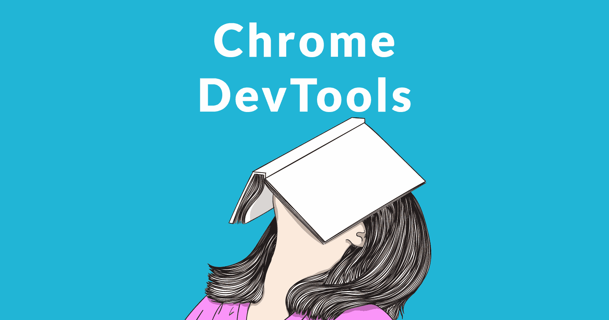
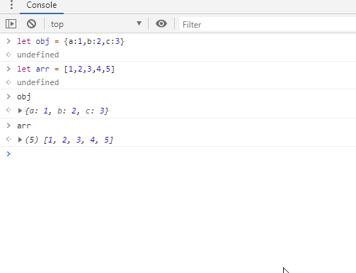
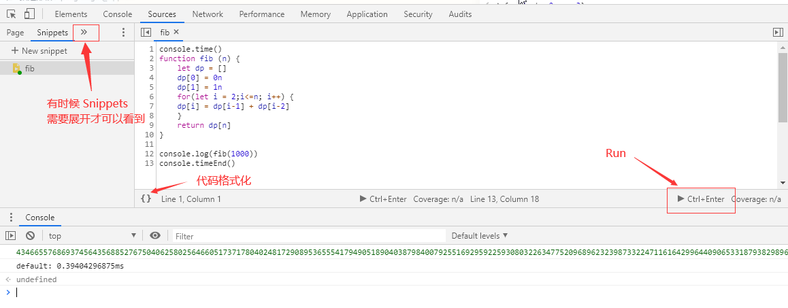
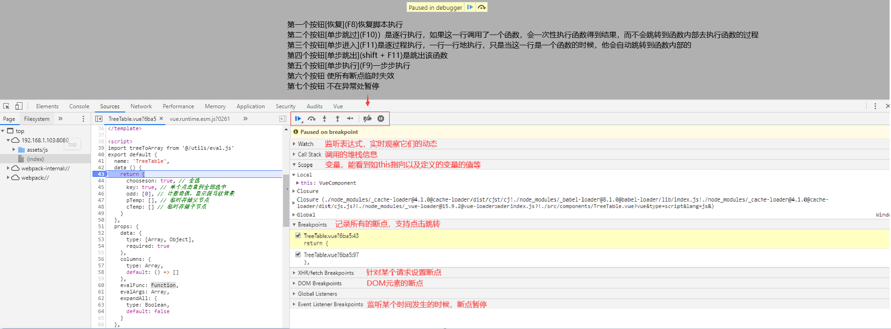
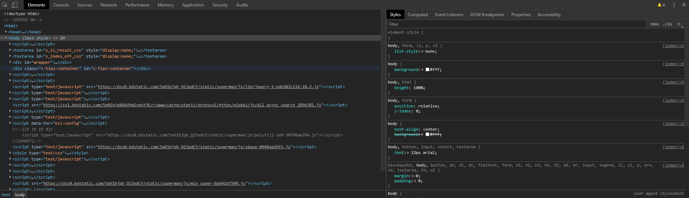

Chrome Devtools的调试技巧

前言
我们每天都在写
bug代码，那么拥有一身流畅的调试本领是十分重要的，下面是我总结一些实用的调试技巧，使无论在开发环境、生产环境都能够第一时间定位问题
正文
下面你将了解
- $
- $$
- $0~$4
- $_
- console.table
- Store as global
- copy()
- Snippets
- 断点调试
- command 菜单
- 常用快捷键
Console面板-“$”
Console 面板是我们最喜欢打开的面板之一，可以用来查看输出的信息以及查询 api
$ 在 JQuery 它是选择器，那么在 Console 面板中它是 document.querySelector的简写

$$ 是 document.QuerySelectorAll 的简写，并且返回的是一个数组，而不是一个 Node List

$0 是最后选择的 DOM 元素, $1是相对$0再上一个选择的元素，$3、$4 同理

$_与元素无关，它是控制台最后输出的值

当 $ 遇上 Vue, 我们很轻松能够访问 Vue 的实例对象，尤其是在【生产环境】，没有 Vue.js devtools的时候，定位问题十分方便

Console面板-通用
console.table 以表格形式展示数据，能够更清楚展示对象及数组

copy() 指定内容到剪贴板, 如 copy($_)等
%E7%9A%84%E7%94%A8%E6%B3%95.gif)
Store as global 为对象或者数组取名字，在小三角处右键即可。方便后续调用以及或者 copy()

Snippets(代码块)
相信不少人吐槽 Console 面板的换行问题，那么大可把代码移步至 Sources - Snippets
可以正常换行、格式化代码、运行代码、持久储存在浏览器中
Snippets + Console 面板 = 自带 API 的 JavaScript 编辑器
平时刷题，尤其是算法题时，能少打开一个应用就少打开一个应用😚
牛客网考试时，使用这个就不错，十分轻量级，一个 Google Chrome 浏览器足矣 🥳

断点调试
虽然 console.log 也能起到调试的作用，但是还是断点调试比较强大

command菜单
快捷键 shift + ctrl + p
截图： Google Chrome 浏览器自带截图存为图片功能，不需要插件
Capture area screenshot选取截图（类似QQ截图）Capture full size screenshot长截图Capture node screenshot节点截图Capture screenshot可视区域截图

既然说到截图，顺便安利下微软的 snipaste
免费无广告的可取色可调整透明度可看历史截图的一款贴图软件
可以说前端必备，减少在 UI 与 代码 以及浏览器切换的频率
主题： theme 可选 dark / light

其他
常用快捷键

最后
希望大家用不上，愿世界无 BUG